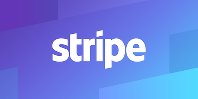

Technologies
To create a base layer that other components can be built upon, many web applications use a framework for rapid development while using standardized base code. Although many frameworks exist, Django was an obvious choice due to our team’s background with Python. It offered an extendable solution while offering protection against many security flaws that exist in web applications such as Cross Site Scripting, Cross Site Forgery Requests, and SQL Injection to name a few. Furthermore, Django offers many different versions that have been evolving over the years. The Order of Pi web application needs to have maintained solutions so that future students involved with the Engineering Student Society are not constantly concerned with security and data-loss patches. This led to the decision to use Django version 1.11LTS, which is the latest Long Term Support solution offered by Django. This version will be maintained until April 2020 with feature releases every 8 months as well as applied security and data-loss fixes.

The main reasons for rebuilding the Order’s site was to make it easier for the organizers to run, and to bring in online payments to make it easier and more convenient for people to donate. Many options were researched with regards to online payments but Stripe was chose due to the ease of integration as well as having the lowest fees. The stripe checkout widget is used to verify and validate the credit card information entered, this also keeps all of the sensitive credit card information off the site.
The webserver for the Order's site consists of two separate modules, working hand-in-hand. The first of which is the uWSGI module; tasked with packaging and serving the Django Python application in a format that front-end webservers can understand. NGINX is the front-facing component of the webserver; efficiently handling the user's requests, providing load balancing, and leveraging the standard in encryption technology to ensure all transactions are secured. uWSGI and NGINX communicate directly through their own server-side port, together forming the Order's webserver.
For this project the team was hoping to use Postgres as a query language as it is what we had learned in school, but it was far easier to work with the existing setup. The ESS runs a MySQL database on thier server which is version 5.5 so everything implemented needed to be able to run on that. A schema with five new tables was created to facilitate the development of the project.
Cloudflare provides the Order's SSL certificates, giving us the ability to properly authenticate with our users. Having properly signed SSL certificates is a fundamental foundation for any trusted website leverage the HTTPS protocol. This gives the users peace-of-mind knowing that all transactions, including credit card transactions, remain secure.